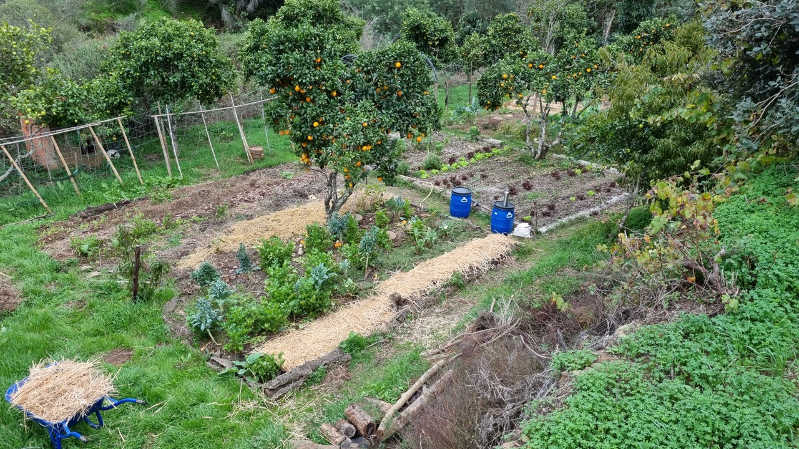
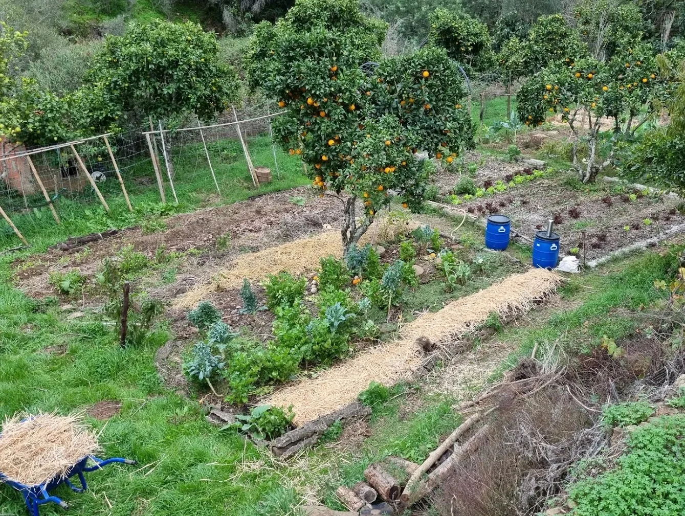

01 · Moinhos, Algarve
An orchard becomes a place to grow.
At this retreat, Benjy managed and improved the permaculture gardens, working with the existing citrus orchard, productive beds, soil cover and local biomass. The story is one of ongoing care, observation and seasonal work.

